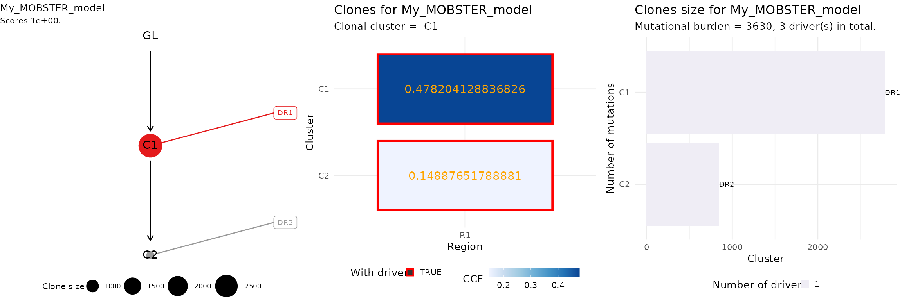

vignettes/a6_CloneTrees.Rmd
a6_CloneTrees.RmdClone trees from mobster fits can be computing using the internal interface with ctree.
You need to have drivers annotated your object if you want to use ctree, and every driver_label has to be unique, as it will be used as the variantID column to identify the driver event.
We show the analysis with a synthetic dataset.
# Example data where we annotate 3 events as drivers example_data = Clusters(mobster::fit_example$best) example_data = example_data %>% dplyr::select(-cluster, -Tail, -C1, -C2) # Drivers annotation drivers_rows = c(2239, 3246, 3800) example_data$is_driver = FALSE example_data$driver_label = NA example_data$is_driver[drivers_rows] = TRUE example_data$driver_label[drivers_rows] = c("DR1", "DR2", "DR3") # Fit and print the data fit = mobster_fit(example_data, auto_setup = 'FAST') #> [ MOBSTER fit ] #> ✔ Loaded input data, n = 5000. #> ❯ n = 5000. Mixture with k = 1,2 Beta(s). Pareto tail: TRUE and FALSE. Output #> clusters with π > 0.02 and n > 10. #> ! mobster automatic setup FAST for the analysis. #> ❯ Scoring (without parallel) 2 x 2 x 2 = 8 models by reICL. #> ℹ MOBSTER fits completed in 14.8s. #> ── [ MOBSTER ] My MOBSTER model n = 5000 with k = 2 Beta(s) and a tail ───────── #> ● Clusters: π = 55% [C1], 31% [Tail], and 14% [C2], with π > 0. #> ● Tail [n = 1370, 31%] with alpha = 1.2. #> ● Beta C1 [n = 2784, 55%] with mean = 0.48. #> ● Beta C2 [n = 846, 14%] with mean = 0.15. #> ℹ Score(s): NLL = -5671.5; ICL = -10359.09 (-11266.35), H = 907.26 (0). Fit #> converged by MM in 75 steps. #> ℹ The fit object model contains also drivers annotated. #> # A tibble: 3 x 4 #> VAF is_driver driver_label cluster #> <dbl> <lgl> <chr> <chr> #> 1 0.448 TRUE DR1 C1 #> 2 0.159 TRUE DR2 C2 #> 3 0.0629 TRUE DR3 Tail best_fit = fit$best print(best_fit) #> ── [ MOBSTER ] My MOBSTER model n = 5000 with k = 2 Beta(s) and a tail ───────── #> ● Clusters: π = 55% [C1], 31% [Tail], and 14% [C2], with π > 0. #> ● Tail [n = 1370, 31%] with alpha = 1.2. #> ● Beta C1 [n = 2784, 55%] with mean = 0.48. #> ● Beta C2 [n = 846, 14%] with mean = 0.15. #> ℹ Score(s): NLL = -5671.5; ICL = -10359.09 (-11266.35), H = 907.26 (0). Fit #> converged by MM in 75 steps. #> ℹ The fit object model contains also drivers annotated. #> # A tibble: 3 x 4 #> VAF is_driver driver_label cluster #> <dbl> <lgl> <chr> <chr> #> 1 0.448 TRUE DR1 C1 #> 2 0.159 TRUE DR2 C2 #> 3 0.0629 TRUE DR3 Tail
Tree computation removes any mutation that is assigned to a Tail cluster because the clone tree represents the clones.
# Get the trees, select top-rank trees = get_clone_trees(best_fit) #> [ ctree ~ generate clone trees for My_MOBSTER_model ] #> Sampler : 10000 (cutoff), 5000 (sampling), 100 (max store) #> # A tibble: 2 x 5 #> cluster R1 nMuts is.clonal is.driver #> <chr> <dbl> <dbl> <lgl> <lgl> #> 1 C2 0.149 846 FALSE TRUE #> 2 C1 0.478 2784 TRUE TRUE #> #> ✔ Region R1 ~ #CCF clusters > 1%: 2 #> ✔ Trees per region 1 #> ✔ Hashed trees 1 #> There are no alternatives! #> ✔ Pigeonhole Principle #> ✔ Ranking trees #> ✔ Trees with non-zero sscore 1 storing 1
The top-rank tree is in position 1 of trees; ctree implements S3 object methods to print an plot a tree.
top_rank = trees[[1]] # Print with S3 methods from ctree ctree:::print.ctree(top_rank) #> [ ctree - ctree rank 1/1 for My_MOBSTER_model ] #> #> # A tibble: 2 x 5 #> cluster R1 nMuts is.clonal is.driver #> <chr> <dbl> <dbl> <lgl> <lgl> #> 1 C2 0.149 846 FALSE TRUE #> 2 C1 0.478 2784 TRUE TRUE #> #> Tree shape (drivers annotated) #> #> \-GL #> \-C1 :: DR1 #> \-C2 :: DR2 #> #> Information transfer #> #> DR1 ---> DR2 #> GL ---> DR1 #> #> Tree score 1
We can plot the top tree, aggregating different ctree plots.
# 1) Clone tree # 2) Input ctree data (here adjusted VAF) # 3) Clone size barplot ggpubr::ggarrange( ctree::plot.ctree(top_rank), ctree::plot_CCF_clusters(top_rank), ctree::plot_clone_size(top_rank), nrow = 1, ncol = 3 )
